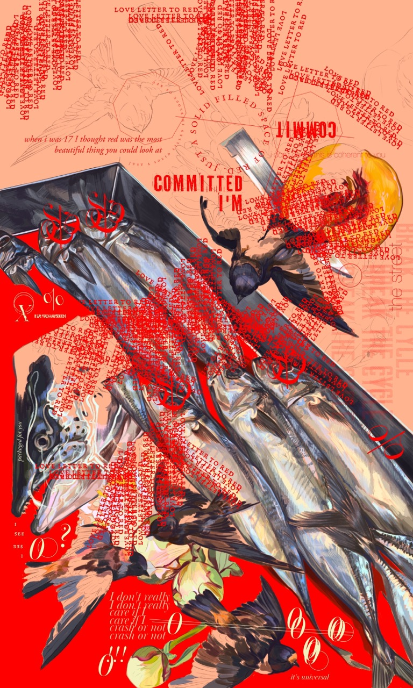

When I was 17 I thought red was the most beautiful thing you could look at,
Just a solid filled in block of red.
Red was always my favorite color.
I never wore red. If I did I always felt like a caricature of my heritage. The conflict of being raised in a culturally Russian household despite not being fully Russian myself. Especially red lipstick. I hated the way red lipstick looked on me. When I looked in the mirror all I saw was all the beauty standards, traditional gender roles, and conformity I had grown to resent.
For a while I couldn’t stop painting any empty space in my pieces with red. Painting space with red became a sort of compensation for any uncomfortable space or silence. Rewriting red into something removed from cultural implications and canon of socialist realist painting was progress in my mind.
None of it could ever override the generational trauma no one in my family wanted to confront or unpack. There’s only so many cycles you can break if you let the pain fester.
So I wore red lipstick for my halloween costume this year. And I liked it. I still looked like me
